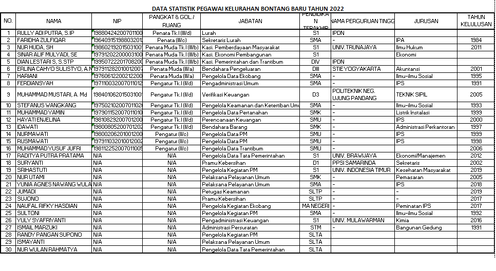
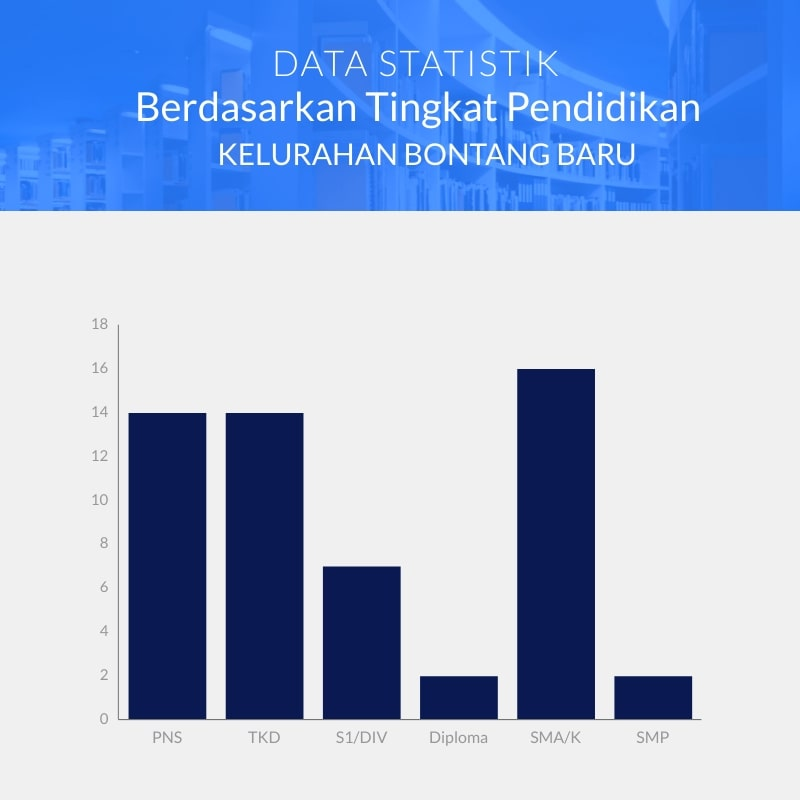
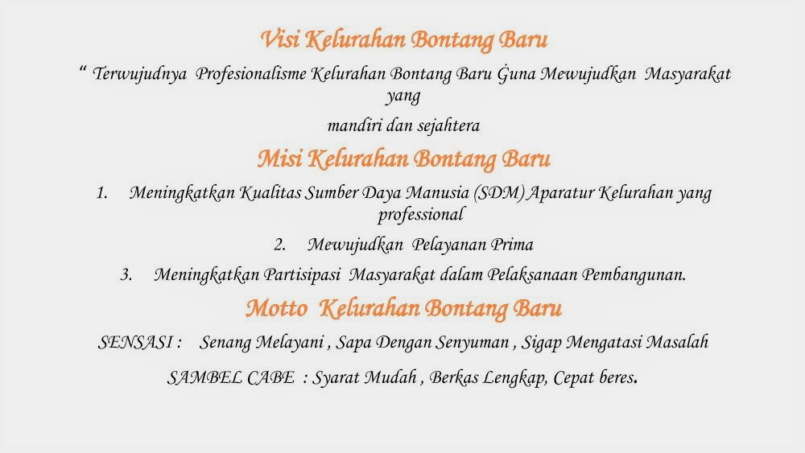

Profil Kelurahan Bontang Baru
Kelurahan Bontang Baru merupakan kelurahan yang terletak di wilayah Kecamatan Bontang Utara, Kota Bontang, Propinsi Kalimantan Timur Indonesia.
A. Kepegawaian
Kelurahan Bontang Baru saat ini dipimpin oleh Lurah Bagus Susanto, S.IP, Dalam mengemban tugasnya sehari-hari, Lurah Bontang Baru dibantu oleh pejabat struktural dan staf dengan jumlah personel 28 orang yang terdiri dari 14 PNS dan 14 Non PNS.
DATA STATISTIK KELURAHAN BONTANG BARU


B. Pelayanan Umum KePendudukan
Untuk mengurus administrasi kePendudukan, Penduduk setempat bisa datang ke Kantor Kelurahan Bontang Baru yang beralamatkan di Jl. Dewi Sartika No. 1 RT. 09, Kecamatan Bontang Utara, Kota Bontang. Untuk informasi lebih lanjut bisa menghubungi nomor telepon kantor 0548-28372, atau melihat laman resminya di http://kel-bontangbaru.bontangkota.go.id/.
{kind=link}
Pelayanan Umum KePendudukan di Kelurahan Bontang Baru berbasis online menggunakan Sistem Pelayanan Umum Terpadu Kelurahan (Siput) dan untuk pelayanan RT menggunakan aplikasi e-RT.
{kind=link}
C. Mitra Kerja Kelurahan
Dalam menjalankan tugas pemerintahan di wilayahnya, Kelurahan Bontang Baru memiliki mitra kerja mulai dari bidang pendidikan, kesehatan masyarakat, ekonomi masyarakat, keamanan dan ketertiban, pemerintahan, lembaga masyarakat, hingga pemberdayaan kesejahteraan keluarga. Selain itu, terdapat organisasi sosial kemasyarakatan seperti karang taruna, PKK, LPM, Kelompok Sadar Wisata (Pokdarwis), Lembaga Keswadayaan Masyarakat (LKM), Kelompok Swadaya Msyarakat (KSM), Kelompok Tani Kulintang Sejahtera, Forum Anak Kelurahan, Tokoh Masyarakat, Satgas Linmas, dan lain-lain.
D. Wilayah Administratif
Secara administratif Kelurahan Bontang Baru terdiri dari 28 Rukun Tetangga (RT), dengan Penduduk sebanyak 15.727 jiwa (3.573 KK) yang terdiri dari laki-laki 8.596 jiwa dan perempuan 7.131 jiwa, Usia 0-15 tahun sejumlah 2.629 jiwa (sumber: Monografi Kelurahan Bontang Baru Semester 2 Tahun 2020) dengan luas wilayah sekitar 222 ha. yang memiliki batas- batas sebagai berikut :
| LETAK | BATAS GEOGRAFIS | KECAMATAN |
| Sebelah Utara | Selat Makassar | Bontang Utara |
| Sebelah Selatan | Kelurahan Api-Api | Bontang Utara |
| Sebelah Timur | Kelurahan Bontang Kuala | Bontang Utara |
| Sebelah Barat | Kelurahan Gunung Elai | Bontang Utara |
E. Visi, Misi dan Motto Kelurahan Bontang Baru

{kind=link}